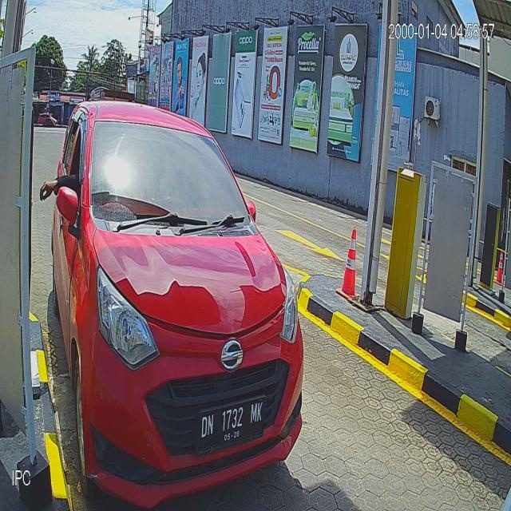
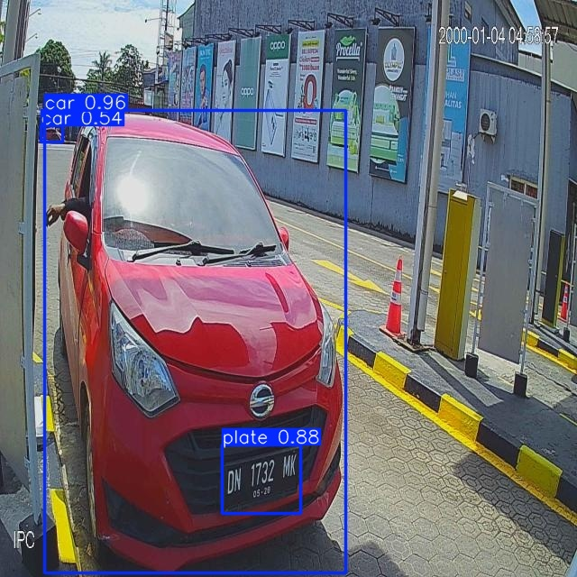
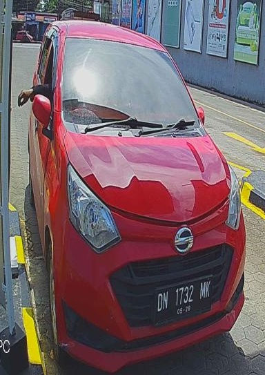

Build a Prototype App
with Prompting, Gemini & Antigravity
An interactive session where we combine all tools and techniques to build a fully functional prototype from the ground up.
What does this city
struggle with
every single day?
"Makassar is the gateway to Eastern Indonesia — over 1.5 million vehicles, growing 8% every year, and almost zero automated monitoring."



{ "vehicle_type": "car", "vehicle_bbox": [123, 45, 678, 901], "plate_bbox": [456, 78, 567, 123], "plate_number": "B 1234 ABC", "plate_date": "08/29", "plate_text_color": "black", "plate_background_color": "white", "plate_blue_strip": "no", "plate_type": "private", "confidence_score": 0.94 }
From Zero to Working AI App
Planning & Requirements
Persona & System + Chain of Thought
PRD.md.SYSTEM: You are a Senior PM for AI Smart City apps. Goal: Scope a 30-min MVP for Makassar LPR. USER: Design a Product Requirement Document (PRD). Use Chain of Thought: 1. Define ONE core user flow (Gate entry). 2. List P0 requirements (OCR speed/accuracy). 3. Specify AI pipeline (Vehicle -> Plate -> Data). 4. List Out-of-Scope items for today.
PRD.md (Structured Requirements)
Architecture & Design
Few Shot + Tree of Thought
DESIGN.md.USER: Using PRD.md, design the system architecture. Use Tree of Thought to evaluate 3 stacks: - Option A: Node.js + Express + Vanilla JS - Option B: Node.js + Next.js (App Router) - Option C: Node.js + NestJS (MVC) Evaluate: Speed, SDK support, UI flexibility. Output: DESIGN.md with chosen stack, API contracts, and OCR JSON schema.
DESIGN.md (Tech Stack + Schema)
Implementation
Multi-Stage Prompting · Build order: UI → Backend → AI
PRD.md +
DESIGN.md into AI before writing any code.USER: I am starting implementation. Please read PRD.md and DESIGN.md. Acknowledge that you understand the 3-step AI pipeline and the chosen tech stack. Do not write code yet.
Focus on intent while the AI handles the code. Review every line as the Architect.
Build the Frontend
Modern UI with Drag & Drop + Loading States
USER: Build 'index.html' for the LPR dashboard. 1. Drag & drop zone with image preview. 2. 'Scan' button for backend POST /detect. 3. Loading animation cycling through: "Detecting Vehicle...", "Isolating Plate...", "Reading OCR..." 4. Results grid: Plate No, Type, Color. Use Vanilla JS + Modern CSS (Dark Theme).
Build the Backend
Node.js + Express + Multer
cors
middleware to allow frontend requests.cleanJSON to strip AI
markdown and geminiCrop for BBox crops.USER: Write 'server.js' using Node.js and Express. 1. POST /detect endpoint for image uploads. 2. Utility: 'geminiCrop(image, bbox)' for normalized [y1, x1, y2, x2] cropping. 3. Utility: 'cleanJSON(text)' to strip markdown from AI responses. 4. Stub the AI logic with success JSON. 5. Setup CORS for frontend connection.
AI Integration (The Pipeline)
Chaining Multi-Step Visual Reasoning
USER: Implement 3-step Gemini 3 Flash pipeline: 1. Detect Vehicle: "Return [y1, x1, y2, x2] of the main vehicle." -> Crop. 2. Detect Plate: "In this vehicle crop, find the plate bbox." -> Crop. 3. OCR: "Extract Plate Number, Expiry, Color. Return ONLY as JSON." Handle errors if no vehicle/plate found.
Testing & Debugging
Edge Case Validation · Robustness Testing
USER: Generate 'tests/api.test.js' for server.js. Include test cases for: 1. Valid plate image (Happy Path). 2. Image with no vehicle. 3. Night-time image (Low Contrast). 4. Motorbike plate (Different shape). Also, explain how to fix common OCR failures (e.g., '1' vs 'I') in the prompt.
tests/ (Unit & E2E Test Suite)
bug_report.md (Verification Log)
Review & Polish
Final Optimization · Performance & UX Audit
USER: Perform a final audit of the codebase: 1. Security: Handle large image uploads? 2. Reliability: Retry logic for API? 3. UX: Loading animation synced with API? 4. Accuracy: Few-shot examples for plates? Suggest 3 high-impact polish items for the Live Demo (e.g., sound effects, dark mode).
Pipeline Thinking
Complex AI tasks are just simple steps chained together. Vehicle detect → plate detect → OCR. Break every problem into the smallest possible steps.
Context Is Everything
Gemini reads a plate more accurately when it sees just the plate — not the full original image. Cropping is context engineering, not just image processing.
The Prompt Is the Product
A precise, well-structured prompt is the core intellectual property of an AI application. The prompt is more valuable than the code around it.
"A year ago this required a CV engineer, a custom-trained OCR model, weeks of labeled data, and ML infrastructure. Today it required a clear prompt, the right context, Gemini Vision, and 30 minutes."
"AI won't replace developers,
but developers who use AI will replace
those who don't"